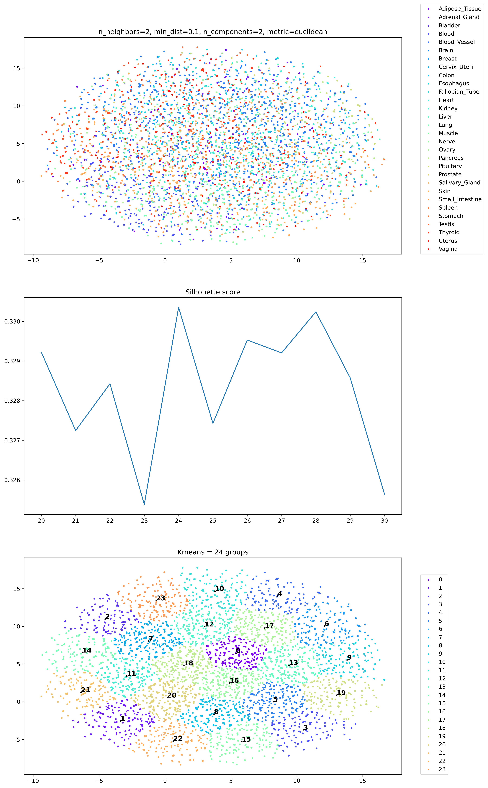
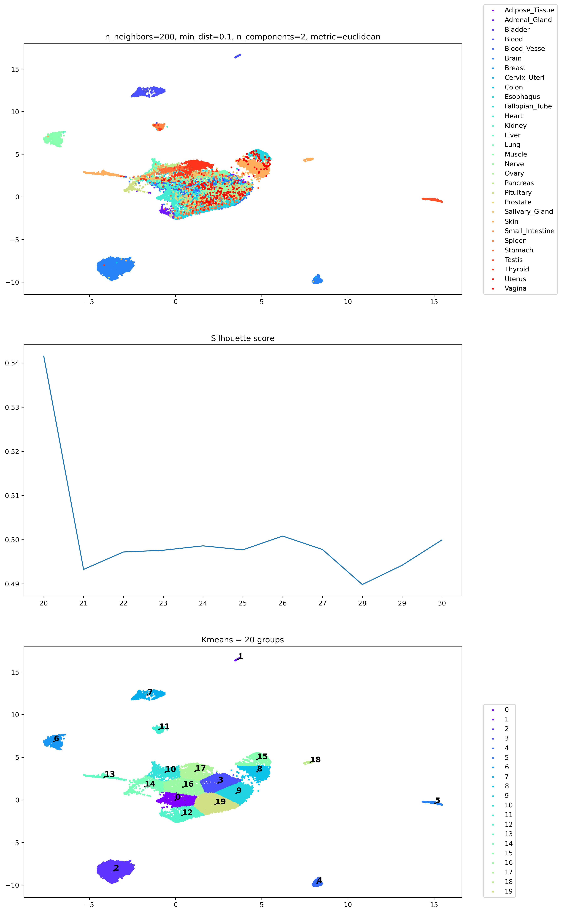
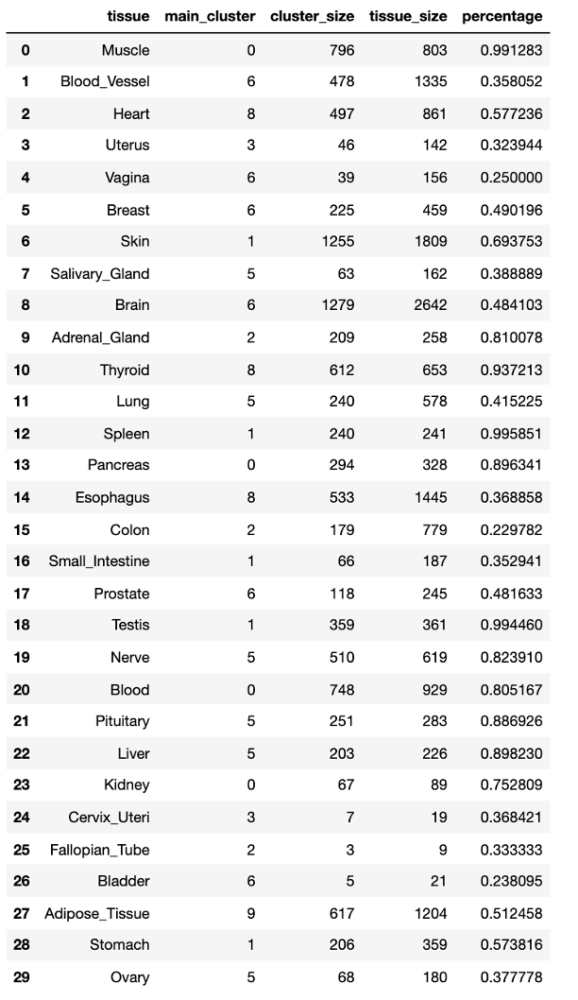
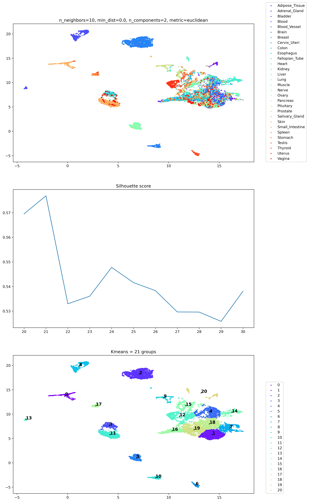

UMAP to analyze whether NPC gene expression data is tissue-specific
2021/06/07 Mon.
Chih-Yuan Chou
installation of used packages
Hyperparameters in UMAP function
import UMAP
umap.UMAP(
n_neighbors=15,
min_dist=0.1,
n_components=2,
metric='euclidean'
)
n_neighbors
- the number of neighbors
- balance local v.s. global structure
low values ➝ local
high values ➝ global
- range from 2 to 200
min_dist
- minimum distance to apart points
- Compactness of all points distribution
- range from 0.0 to 0.99
n_components
- determine dimensionality of reduced dimensions
- usually set as 1 or 3
metric
- euclidean
- manhattan
- chebyshev
- minkowski
- canberra
- braycurtis
- haversine
- mahalanobis
- wminkowski
- seuclidean
- cosine
- correlation
- hamming
- jaccard
- dice
- russellrao
- kulsinski
- rogerstanimoto
- sokalmichener
- sokalsneath
- yule
Results of UMAP and Kmeans
Diffirent n_neighbors results (2 , 10, 20)

Diffirent n_neighbors results (50, 100, 200)

Clustering results mapping to tissue classifications

Clustering results mapping to tissue classifications
Different min_dist results(0.0, 0.1, 0.25)

Different min_dist results(0.5, 0.8, 0.99)
Clustering results mapping to tissue classifications
The optimized hyperparameters
import UMAP
umap.UMAP(
n_neighbors=10,
min_dist=0.1,
n_components=2,
metric='euclidean'
)
So, the highset median is 0.5013 and Q3 is 0.8205, which means some have tissue-specific features but others don't.
Results of tissue-specific distribution